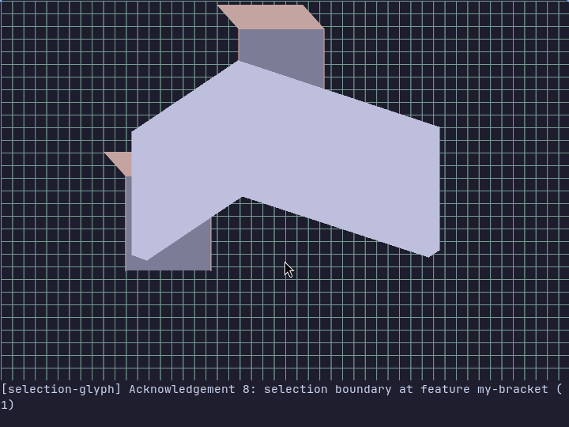
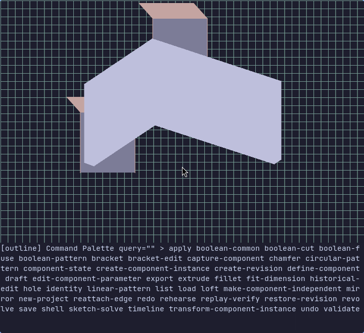
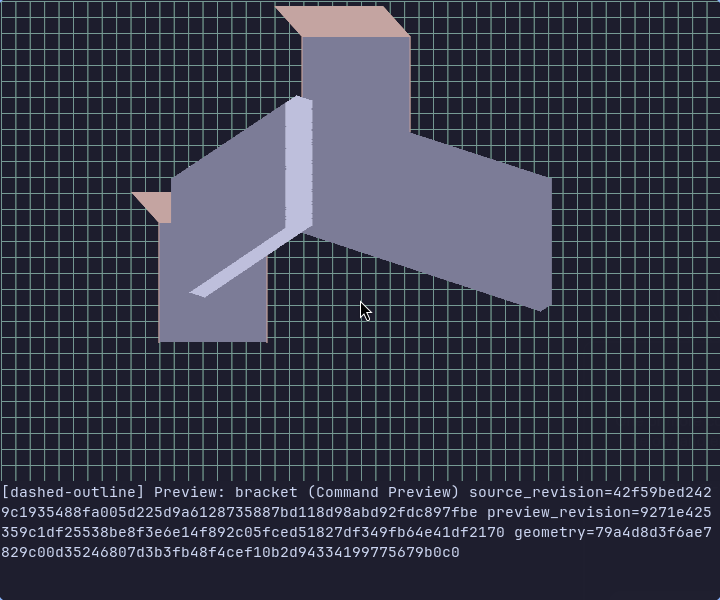

For the keyboard-first maker
Your next print
starts in a
terminal.
A bracket for your desk. A spacer that actually fits. Make functional parts in 3D, without leaving your favorite kind of interface.
Get ThreeTermLinux x86_64 · Direct local Ghostty · Open source


Useful parts.
Explicit dimensions.
Build up solid geometry with named features and repeatable inputs. Keep the editable project, then send an export to the slicer you already use.
- Give an idea some volume.
- Start with an L-bracket, extrude a profile, or revolve one around an axis. Add or cut material with extrusion.
- Make the details work.
- Join solids, add holes, round or chamfer edges, shell a body, and create draft or lofted geometry.
- Do it once. Repeat it.
- Mirror a feature or create linear and circular patterns with explicit directions, spacing, and counts.
- Keep it editable.
- Committed changes are recorded in a project bundle. Reopen your work, validate the current solid, and export STL, 3MF, or STEP.
A little typing.
A real part.
The current MVP uses JSON command drafts. If you enjoy precise inputs and a keyboard-first workflow, pull up a terminal.
-
Pick your operation.
Press Ctrl + P, search for
bracket, and press Enter to open its draft.
-
Try it before you commit.
Type dimensions as JSON. Ctrl + V previews; Ctrl + Enter commits. Esc cancels.

-
Take it to the printer.
Validate your feature at the current revision, then export it. Choose print orientation and settings in your own slicer.
Part filemy-bracket.stlDimensions in mm
Your slicer. Your printer. Your settings.


Clear a spot
on your PATH.
Automatic setup for Arch Linux, x86_64. The installer builds ThreeTerm from source and sets up the native geometry and sketch workers.
This is an early MVP. The verified interactive terminal is Ghostty 1.3.1-arch2, in a direct local window. Startup also checks actual terminal capabilities.
sudo -v
curl -fsSL https://raw.githubusercontent.com/rafaelromao/threeterm/main/install.sh | bashInstalls to ~/.local. Runs a full pacman -Syu system upgrade, installs build tools and Ghostty, and builds pinned Rust, OCCT, and libslvs sources. Allow time and several GB of free space.
git clone https://github.com/rafaelromao/threeterm.git
cd threeterm
sudo -v
make installThen, in Ghostty: threeterm-tui ~/first-part.threeterm
Use the new-project palette command to create the bundle.
Before you hit Enter.
Will it work in my terminal?
The interactive viewport requires a direct local Ghostty window on Linux with a UTF-8 locale. The verified version is 1.3.1-arch2. tmux and SSH sessions are rejected, and startup requires positive graphics, keyboard, mouse, focus, and resize observations. Missing observations can block startup even on a supported build. The headless CLI is available separately.
How much CAD experience do I need?
Start with the bracket walkthrough and change its dimensions. The current interface expects one-line JSON, named features, and explicit coordinates. It has a graphical viewport, but no form-based parameter editor. Read the user guide before trying more involved operations.
Does it slice or control my printer?
No. ThreeTerm models and validates geometry and exports STL, 3MF, or STEP. Use your usual slicer to generate G-code and your normal workflow to send it to your printer.
Can I automate a model?
Yes. The threeterm CLI outputs JSON, and threeterm-mcp exposes the command API over stdio. They include capabilities beyond the current interactive palette, such as history operations and reusable components. Neither provides a terminal viewport.
Where can I report a rough edge?
Open an issue on GitHub with the command, diagnostic, and terminal version. For startup problems, include whether the window is local and whether a multiplexer is involved.
Made for the satisfaction of
“I printed that.”